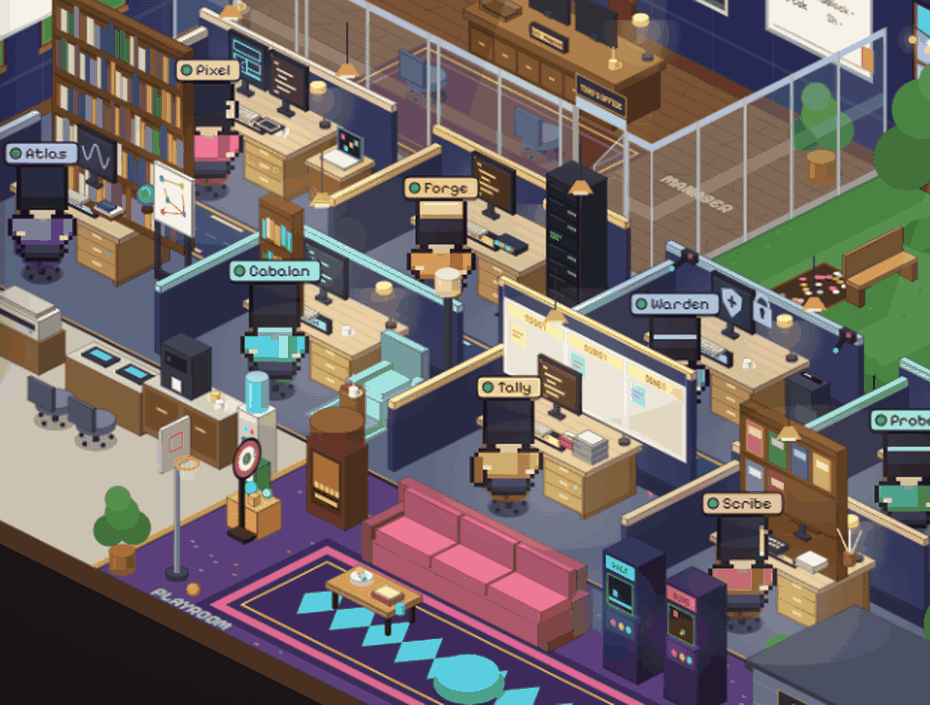
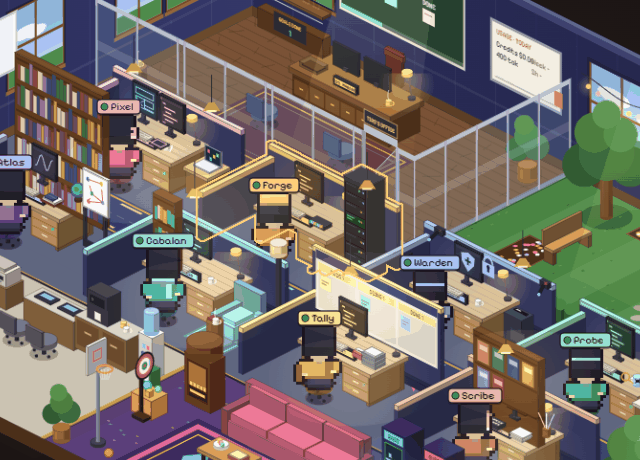
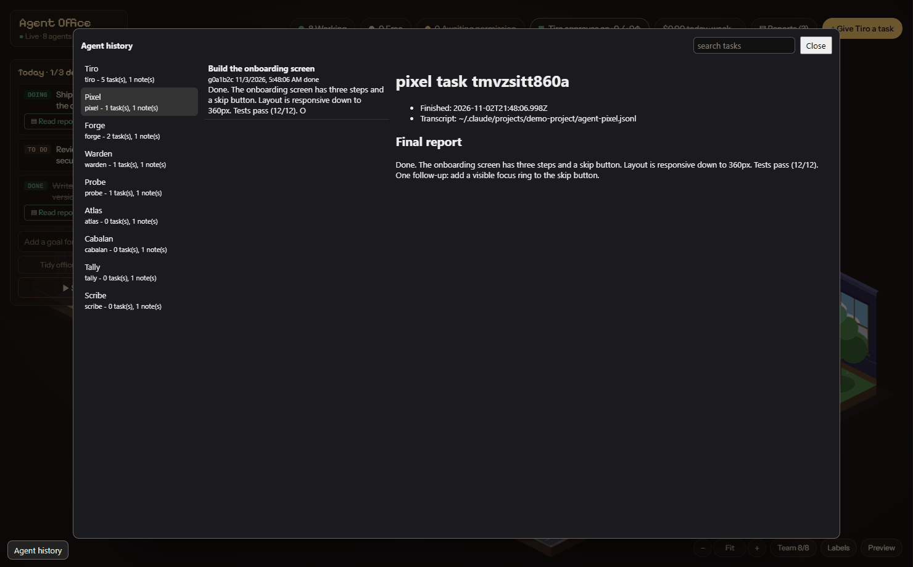

The dashboard and the office
The panels, the world, the objects and the agent history.
The dashboard
The header is one row of pills: manager auto-approval, usage and plan limits, reports, and the switches menu. Below it is the office, with the Today panel, the Team panel and the detail pane over it.

- Click a character to open its detail pane: name, role, task, live log of recent events, the approval it is waiting for, and a box to send it a message.
- Click an empty desk to see who sits there and what they do.
- Team n/8 shows how many specialists are hired. The hire cap is 8 working at once.
- A banner appears when the server is unreachable ("Connecting") and clears when it comes back.
The office
The world is isometric with five zones: Tiro's glass office (top left), the focus area with eight desks, the garden and park (top right, with a gate), the playroom (bottom right) and a utility strip (bottom left). The garage and Scheduler station sit beside the playroom.



- Working agents sit at their own desk. Thinking agents walk to the garden or park. When the board is empty, idle agents go to the playroom. A rate-limited agent waits at the water cooler. A finished goal sends its agent to Tiro's office to report, then back.
- Objects: Today board, Bookshelf (reports), Corkboard (memory), Filing cabinet (SOPs), Inbox tray, Breaker box, Server rack, Whiteboard (tokens and limits), Coffee machine (espresso: the next hire uses the fast model), Arcade, Jukebox, Server plant, and the Scheduler garage and mailbox.
- Breaker box switches: Tiro (manager) on/off, Autopilot, Hiring, Terminal approvals, the Subscription guard, and (desktop app only) the Notch, which stops at the 5-hour or weekly plan limit instead of spending extra-usage credits.
- Click outlines. Objects and people are picked by their drawn shape, not a rough box. Hover shows a gold outline that follows the silhouette; where pieces overlap, the smaller one wins. Characters are depth-sorted so none is hidden behind its own desk.

- Camera. Mouse wheel zooms about the cursor (1x to 3x), drag pans when zoomed, keys
+,-and0zoom and reset, and corner buttons do the same. Bottom-right controls: Team count, Labels (zone names), and Preview, which plays demo scenes (work, think, blocked, report, empty, tour) without touching real data.
Agent history
The Agent history button (bottom left) opens a three-pane browser: agents on the left, that agent's tasks (with search) in the middle, and the task summary on the right with the transcript path and the agent's folder paths. Every hire starts in a fresh context; the only thing carried over is that agent's own memory folder. Folders are under ~/.claude/agent-office/agents/tiro/<type>/{memory,history}. Summaries are redacted for secrets. See Agents and memory.

